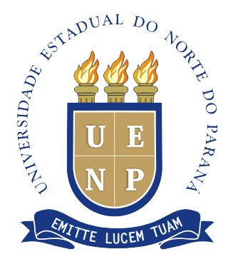

Universidade Estadual do Norte do Paraná
Explore as instalações, setores administrativos, laboratórios e centros do campus de Bandeirantes.
Conheça os cursos da UENP e encontre facilmente os locais de visitação e stands durante o evento.
Acompanhe as apresentações de trabalhos, simpósios e locais das atividades acadêmicas.